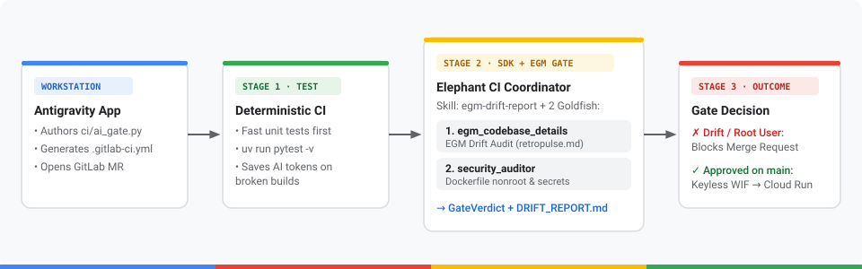
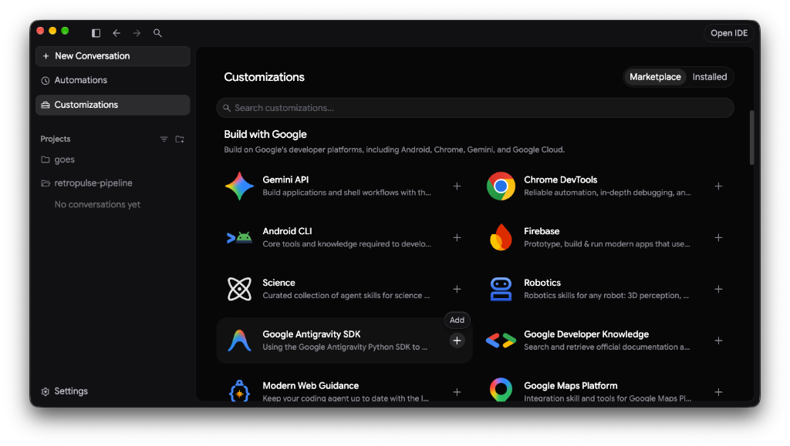

Welcome to the hands-on workshop on building and deploying AI-Gated CI/CD Pipelines in GitLab CI/CD using Google Antigravity, the Elephant-Goldfish Model (EGM), and the Google Antigravity Python SDK.

In the Spec-Driven Development with Antigravity workshop, we used EGM on our workstation to write specifications and detect spec-vs-code drift locally. In this workshop, you will bring egm-drift-report and stateless Goldfish subagents directly inside GitLab CI/CD using the Antigravity Python SDK on every Merge Request:
pytest): Fast, cheap unit tests run first so broken code fails in seconds without spending AI tokens.ci/ai_gate.py): A read-only Elephant coordinator loads the official egm-drift-report skill and delegates in parallel to two stateless Goldfish—egm_codebase_details (auditing docs/designs/retropulse.md) and security_auditor (auditing Dockerfile and source files)—returning a typed Pydantic pass/fail verdict and DRIFT_REPORT.md.main, ship to Google Cloud Run using keyless OIDC Workload Identity Federation..gitlab-ci.yml pipeline with masked variables, uv caching, and DRIFT_REPORT.md job artifacts.git, and uv installed locally.To spend 100% of our time on Antigravity SDK, EGM, and GitLab CI/CD, you will start from a ready-made starter project of RetroPulse (a lightweight FastAPI Sprint Retrospective Board with unit tests, a non-root multi-stage Dockerfile, and an approved specification in docs/designs/retropulse.md).
https://github.com/AlvarDev/retropulse-starter.git).retropulse-pipeline, keep visibility Private (or Internal), and click Create project.Some self-managed corporate GitLab servers firewall external imports from GitHub even when your laptop can reach both. If URL import is disabled or fails:
retropulse-pipeline, uncheck “Initialize repository with a README”, and click Create project.origin to your new GitLab project URL, and push:git clone https://github.com/AlvarDev/retropulse-starter.git retropulse-pipeline
cd retropulse-pipeline
git remote set-url origin <YOUR_GITLAB_REPO_URL>
git push -u origin mainSince retropulse-pipeline is now already on your machine, skip git clone in Section 2 below and open the folder directly in Antigravity App!
Clone your new GitLab project to your machine and open it in Antigravity App:
git clone <YOUR_GITLAB_REPO_URL> retropulse-pipeline
cd retropulse-pipelineIn Antigravity App, click Create Project (or Open Folder), add your retropulse-pipeline folder, and click Next.
Antigravity ships with an official curated bundle that teaches your coding agent the exact classes, policies, and patterns of the Python SDK:

The google-antigravity package on PyPI bundles the compiled Antigravity runtime binary directly inside its Python wheel—meaning both your laptop and your GitLab Linux runner get the full runtime from a single uv command with no extra CLI installers.
Ask Antigravity (or run in your terminal) to add google-antigravity as a development/CI dependency and run the unit test suite:
uv add --dev google-antigravity
uv run pytest -vYou should see 4 passed. Keeping google-antigravity in dev dependencies ensures our production Dockerfile (which runs uv sync --no-dev) stays tiny and contains only FastAPI and Uvicorn!
Now let’s build ci/ai_gate.py—an autonomous release gate powered by the Google Antigravity Python SDK and the official Elephant-Goldfish Model (EGM).
Raw egm-drift-report writes a helpful Markdown report, but on its own it does not return a CI exit code or inspect container security. Wrapping EGM inside google-antigravity gives your GitLab pipeline three production-grade superpowers:
CapabilitiesConfig and enforce policy.deny(...) rules so the CI agent can inspect files and diffs without ever modifying code or running shell commands.skills/egm-drift-report/SKILL.md via types.InlineSkill and delegates in parallel to egm_codebase_details (loaded directly from agents/codebase_details.md) and security_auditor (auditing Dockerfile and secrets).response_schema=GateVerdict guarantees a typed approved: bool field so Python writes DRIFT_REPORT.md and exits 0 (pass) or 1 (block Merge Request) reliably.ci/ai_gate.py from Antigravity AppCopy and paste Prompt 1 into the Antigravity App chat:
Use the Google Antigravity Python SDK (`google-antigravity`) and the upstream Elephant-Goldfish Model (`https://github.com/google/elephant-goldfish-model.git`) to create `ci/ai_gate.py` as an autonomous CI/CD drift and security gate:
1. Define Pydantic models `Finding` (`category`: Literal["SPEC_DRIFT", "SECURITY"], `severity`: Literal["HIGH", "MEDIUM", "LOW"], `file`, `description`, `remediation`) and `GateVerdict` (`approved`: bool, `risk_level`: Literal["LOW", "MEDIUM", "HIGH"], `summary`: str, `findings`: list[Finding]).
2. Write `ensure_egm_repo() -> Path` that uses `EGM_REPO_PATH` if set or shallow-clones `https://github.com/google/elephant-goldfish-model.git` (`--depth 1`) into a temp cache directory, plus `_strip_frontmatter(md)` to strip YAML frontmatter.
3. Write a read-only Python tool `get_git_diff() -> str` that checks GitLab Merge Request diffs (`CI_MERGE_REQUEST_DIFF_BASE_SHA` or `CI_MERGE_REQUEST_TARGET_BRANCH_NAME`) and falls back to `git diff HEAD`.
4. Load `skills/egm-drift-report/SKILL.md` into `types.InlineSkill(name="egm-drift-report", ...)` and configure two read-only Goldfish `types.SubagentConfig` subagents (`VIEW_FILE`, `LIST_DIR`, `SEARCH_DIR`, `FIND_FILE`, `skills_config=types.SubagentNoneSkillsConfig()`, plus `tools=[get_git_diff]`):
- `egm_codebase_details`: loads `agents/codebase_details.md` (`Mode: REVIEW`) to audit `docs/designs/retropulse.md` against `main.py`, `static/index.html`, and the diff.
- `security_auditor`: audits `Dockerfile`, `main.py`, and the diff for running as `root` instead of `nonroot`, hardcoded secrets/tokens, or exposed environment variables.
5. Configure `LocalAgentConfig` with `inline_skills=[egm_drift_skill]`, `enable_subagents=True`, read-only `enabled_tools` (including `INVOKE_SUBAGENT` and `FINISH`), `policies=[policy.deny("create_file"), policy.deny("edit_file"), policy.deny("run_command"), policy.allow("*")]`, and `response_schema=GateVerdict` (instructing the Elephant coordinator to set `approved=False` on any HIGH/MEDIUM finding, skip file-writing tools, and invoke the `finish` tool with `GateVerdict` rather than ending with Markdown prose).
6. Stream live `response.tool_calls` progress, support both `GEMINI_API_KEY` and Vertex AI (`GOOGLE_GENAI_USE_VERTEXAI=true`), write `DRIFT_REPORT.md` and `verdict.json` to the repo root, print the report, and exit `0` if `verdict.approved` is True else `1`.ci/ai_gate.pyIf your generated script differs or hits an import question, compare it against this verified implementation:
"""Autonomous CI/CD Quality & Security Gate powered by Antigravity SDK + EGM."""
from __future__ import annotations
import asyncio
import json
import os
from pathlib import Path
import re
import subprocess
import sys
import tempfile
import time
from typing import Any, Literal
from google.antigravity import Agent, BuiltinTools, CapabilitiesConfig, LocalAgentConfig, types
from google.antigravity.hooks import policy
from pydantic import BaseModel, Field
REPO_ROOT = Path(__file__).resolve().parent.parent
EGM_GIT_URL = "https://github.com/google/elephant-goldfish-model.git"
_FRONTMATTER_RE = re.compile(
r"\A---\s*\r?\n(?:.*?\r?\n)?---\s*(?:\r?\n|$)",
re.DOTALL,
)
_JSON_FENCE_RE = re.compile(r"```(?:json)?\s*(\{.*?\})\s*```", re.DOTALL)
class Finding(BaseModel):
category: Literal["SPEC_DRIFT", "SECURITY"]
severity: Literal["HIGH", "MEDIUM", "LOW"]
file: str = Field(description="Relative file path where the issue was found")
description: str = Field(description="What violates the spec or security policy")
remediation: str = Field(description="Concrete fix required to pass the gate")
class GateVerdict(BaseModel):
approved: bool = Field(
description="True ONLY when zero HIGH/MEDIUM spec-drift or security findings exist"
)
risk_level: Literal["LOW", "MEDIUM", "HIGH"]
summary: str
findings: list[Finding] = Field(default_factory=list)
def _strip_frontmatter(markdown_text: str) -> str:
"""Strips optional YAML frontmatter from an EGM skill or Goldfish file."""
return _FRONTMATTER_RE.sub("", markdown_text, count=1).lstrip("\r\n")
def ensure_egm_repo() -> Path:
"""Locates or shallow-clones google/elephant-goldfish-model for CI/local runs."""
env_path = os.environ.get("EGM_REPO_PATH", "").strip()
if env_path:
egm_dir = Path(env_path).expanduser().resolve()
if (egm_dir / "skills" / "egm-drift-report" / "SKILL.md").exists():
return egm_dir
cache_dir = Path(tempfile.gettempdir()) / "elephant-goldfish-model"
if not (cache_dir / "skills" / "egm-drift-report" / "SKILL.md").exists():
subprocess.run(
["git", "clone", "--depth", "1", "--quiet", EGM_GIT_URL, str(cache_dir)],
check=True,
)
return cache_dir
def get_git_diff() -> str:
"""Returns the git diff for the current Merge Request or working tree."""
base_sha = os.environ.get("CI_MERGE_REQUEST_DIFF_BASE_SHA", "").strip()
target_branch = os.environ.get("CI_MERGE_REQUEST_TARGET_BRANCH_NAME", "").strip()
candidates: list[list[str]] = []
if base_sha:
candidates.append(["git", "diff", f"{base_sha}...HEAD"])
if target_branch:
candidates.append(["git", "diff", f"origin/{target_branch}...HEAD"])
candidates.append(["git", "diff", f"{target_branch}...HEAD"])
candidates.append(["git", "diff", "HEAD"])
for cmd in candidates:
res = subprocess.run(
cmd, cwd=REPO_ROOT, capture_output=True, text=True, check=False
)
if res.returncode == 0 and res.stdout.strip():
return res.stdout[:12000]
return "No git diff detected; audit the full repository baseline."
READ_ONLY_SUBAGENT_TOOLS = [
BuiltinTools.VIEW_FILE,
BuiltinTools.LIST_DIR,
BuiltinTools.SEARCH_DIR,
BuiltinTools.FIND_FILE,
]
def build_config() -> LocalAgentConfig:
egm_root = ensure_egm_repo()
drift_skill_body = _strip_frontmatter(
(egm_root / "skills" / "egm-drift-report" / "SKILL.md").read_text(encoding="utf-8")
)
goldfish_body = _strip_frontmatter(
(egm_root / "agents" / "codebase_details.md").read_text(encoding="utf-8")
)
egm_drift_skill = types.InlineSkill(
name="egm-drift-report",
description=(
"Official EGM drift detection workflow comparing design specs in "
"docs/designs/ against the live codebase."
),
content=drift_skill_body,
)
egm_codebase_details = types.SubagentConfig(
name="egm_codebase_details",
description=(
"Official EGM Codebase Details Goldfish auditing docs/designs/retropulse.md "
"against main.py and static/index.html."
),
system_instructions=(
f"{goldfish_body}\n\n"
"CI Execution Context: Run in `Mode: REVIEW` against `docs/designs/retropulse.md`, "
"`main.py`, `static/index.html`, and call `get_git_diff`. Flag any undocumented "
"API endpoints, altered Pydantic validation constraints, or violations of Non-Goals."
),
capabilities=types.SubagentCapabilities(enabled_tools=READ_ONLY_SUBAGENT_TOOLS),
skills_config=types.SubagentNoneSkillsConfig(),
tools=[get_git_diff],
)
security_auditor = types.SubagentConfig(
name="security_auditor",
description="Stateless Security Goldfish auditing Dockerfile and Python code.",
system_instructions=(
"You are a stateless Cloud Security Goldfish running in CI. "
"Read Dockerfile, main.py, and call get_git_diff. Flag HIGH severity "
"issues if the runtime container runs as root instead of nonroot, skips "
"multi-stage isolation, hardcodes secrets/tokens/keys, or exposes "
"environment variables."
),
capabilities=types.SubagentCapabilities(enabled_tools=READ_ONLY_SUBAGENT_TOOLS),
skills_config=types.SubagentNoneSkillsConfig(),
tools=[get_git_diff],
)
return LocalAgentConfig(
model=os.environ.get("ANTIGRAVITY_MODEL") or None,
workspaces=[str(REPO_ROOT)],
inline_skills=[egm_drift_skill],
system_instructions=(
"You are the Elephant CI/CD Release Gate Coordinator. "
"Use the analysis steps from the `egm-drift-report` skill on `docs/designs/` "
"(do NOT attempt to call file-writing tools—CI enforces read-only policies "
"and Python writes `DRIFT_REPORT.md` from your structured output). "
"Invoke BOTH `egm_codebase_details` and `security_auditor` Goldfish in parallel, "
"synthesize their findings without invention, and set approved=False if ANY "
"HIGH or MEDIUM finding exists. IMPORTANT: Override Step 4 of `egm-drift-report`—"
"do NOT end with plain Markdown text; you MUST invoke the `finish` tool to submit "
"the final `GateVerdict` structured payload."
),
capabilities=CapabilitiesConfig(
enable_subagents=True,
enabled_tools=[
BuiltinTools.VIEW_FILE,
BuiltinTools.LIST_DIR,
BuiltinTools.SEARCH_DIR,
BuiltinTools.FIND_FILE,
BuiltinTools.INVOKE_SUBAGENT,
BuiltinTools.FINISH,
],
allowed_subagents=["egm_codebase_details", "security_auditor"],
),
policies=[
policy.deny("create_file"),
policy.deny("edit_file"),
policy.deny("run_command"),
policy.allow("*"),
],
subagents=[egm_codebase_details, security_auditor],
response_schema=GateVerdict,
)
def _extract_verdict_payload(agent: Agent, text_fallback: str) -> Any | None:
for step in reversed(agent.conversation.history):
if (
step.depth == 0
and step.type == types.StepType.FINISH
and step.structured_output is not None
):
return step.structured_output
cleaned = text_fallback.strip()
if not cleaned:
return None
if match := _JSON_FENCE_RE.search(cleaned):
cleaned = match.group(1)
try:
return json.loads(cleaned)
except json.JSONDecodeError:
return None
def write_reports(verdict: GateVerdict) -> None:
status_badge = "PASSED" if verdict.approved else "BLOCKED"
drift_findings = [f for f in verdict.findings if f.category == "SPEC_DRIFT"]
sec_findings = [f for f in verdict.findings if f.category == "SECURITY"]
lines = [
f"# Antigravity + EGM CI Gate: {status_badge}",
"",
f"- **Approved**: `{verdict.approved}`",
f"- **Risk Level**: `{verdict.risk_level}`",
f"- **Summary**: {verdict.summary}",
"",
"## docs/designs/retropulse.md (EGM Drift Report)",
"",
]
if not drift_findings:
lines.append("No drift detected")
else:
for f in drift_findings:
lines.append(
f"- **[{f.severity}] `{f.file}`**: {f.description} *(Fix: {f.remediation})*"
)
lines.extend(["", "## Security Audit", ""])
if not sec_findings:
lines.append("No security violations detected")
else:
for f in sec_findings:
lines.append(
f"- **[{f.severity}] `{f.file}`**: {f.description} *(Fix: {f.remediation})*"
)
report_md = "\n".join(lines) + "\n"
(REPO_ROOT / "DRIFT_REPORT.md").write_text(report_md, encoding="utf-8")
(REPO_ROOT / "verdict.json").write_text(
verdict.model_dump_json(indent=2) + "\n", encoding="utf-8"
)
print(f"\n{report_md}")
async def run_gate() -> int:
has_api_key = bool(os.environ.get("GEMINI_API_KEY") or os.environ.get("GOOGLE_API_KEY"))
has_vertex = os.environ.get("GOOGLE_GENAI_USE_VERTEXAI", "").lower() in ("true", "1")
if not has_api_key and not has_vertex:
print(
"ERROR: Set GEMINI_API_KEY (workshop) or GOOGLE_GENAI_USE_VERTEXAI=true "
"(Vertex AI / Gemini Enterprise) before running ci/ai_gate.py.",
file=sys.stderr,
)
return 2
t0 = time.monotonic()
config = build_config()
print(f"[{time.monotonic() - t0:5.1f}s] Starting Antigravity + EGM CI Gate...", flush=True)
async with Agent(config) as agent:
response = await agent.chat(
"Run the EGM drift & security release audit on `docs/designs/` now. "
"Delegate in parallel to `egm_codebase_details` and `security_auditor`, "
"synthesize their findings, and invoke the `finish` tool with GateVerdict."
)
async for tc in response.tool_calls:
print(f"[{time.monotonic() - t0:5.1f}s] Tool call -> {tc.name}", flush=True)
raw = await response.structured_output()
last_text = ""
if raw is None:
last_text = await response.text()
raw = _extract_verdict_payload(agent, last_text)
if raw is None:
followup = await agent.chat(
"Do not output Markdown prose. Invoke the `finish` tool now to submit "
"the final GateVerdict structured payload."
)
raw = await followup.structured_output()
if raw is None:
last_text = await followup.text()
raw = _extract_verdict_payload(agent, last_text)
if raw is None:
raise RuntimeError(
f"Agent failed to produce GateVerdict.\nLast response text:\n{last_text}"
)
verdict = GateVerdict.model_validate(raw)
write_reports(verdict)
return 0 if verdict.approved else 1
if __name__ == "__main__":
sys.exit(asyncio.run(run_gate()))If you do not already have a GEMINI_API_KEY, create one in Google AI Studio (official docs):
Now export GEMINI_API_KEY in your terminal and run the gate against your clean starter project:
export GEMINI_API_KEY="YOUR_GEMINI_API_KEY"
uv run python ci/ai_gate.pyThe multi-agent audit typically takes ~1–2 minutes while streaming live Tool call -> ... progress. Because our starter code aligns with docs/designs/retropulse.md and runs as USER nonroot in Dockerfile, the gate prints # Antigravity + EGM CI Gate: PASSED and exits with code 0!
Now that your EGM gate works locally, let’s wire it into a multi-stage GitLab CI/CD pipeline.
GEMINI_API_KEY in GitLab CI/CD VariablesGEMINI_API_KEY.gitlab-ci.yml in Antigravity AppCopy and paste Prompt 2 into Antigravity App:
Create a `.gitlab-ci.yml` pipeline at the repository root with two stages (`test` and `ai-gate`) using `ghcr.io/astral-sh/uv:python3.12-bookworm-slim` and caching `.uv-cache/`:
1. `unit-tests` (`stage: test`): runs `uv sync --frozen` and `uv run --frozen pytest -v` on Merge Requests (`$CI_PIPELINE_SOURCE == "merge_request_event"`) and pushes to `$CI_DEFAULT_BRANCH`.
2. `antigravity-ai-gate` (`stage: ai-gate`, `needs: ["unit-tests"]`): installs `git` and `ca-certificates` via `apt-get`, shallow-clones `https://github.com/google/elephant-goldfish-model.git` to `/tmp/egm`, runs `uv sync --frozen` and `EGM_REPO_PATH=/tmp/egm uv run --frozen python ci/ai_gate.py`, and always uploads `DRIFT_REPORT.md` and `verdict.json` as GitLab job artifacts (`when: always`, `expire_in: 7 days`) on Merge Requests and `$CI_DEFAULT_BRANCH`..gitlab-ci.ymlstages:
- test
- ai-gate
variables:
UV_CACHE_DIR: "$CI_PROJECT_DIR/.uv-cache"
default:
image: ghcr.io/astral-sh/uv:python3.12-bookworm-slim
cache:
key:
files:
- uv.lock
paths:
- .uv-cache/
unit-tests:
stage: test
script:
- uv sync --frozen
- uv run --frozen pytest -v
rules:
- if: $CI_PIPELINE_SOURCE == "merge_request_event"
- if: $CI_COMMIT_BRANCH == $CI_DEFAULT_BRANCH
antigravity-ai-gate:
stage: ai-gate
needs: ["unit-tests"]
before_script:
- apt-get update && apt-get install -y --no-install-recommends git ca-certificates && rm -rf /var/lib/apt/lists/*
# Production tip: pin elephant-goldfish-model to an immutable commit SHA or release tag
- git clone --depth 1 https://github.com/google/elephant-goldfish-model.git /tmp/egm
script:
- uv sync --frozen
- EGM_REPO_PATH=/tmp/egm uv run --frozen python ci/ai_gate.py
artifacts:
when: always
paths:
- DRIFT_REPORT.md
- verdict.json
expire_in: 7 days
rules:
- if: $CI_PIPELINE_SOURCE == "merge_request_event"
- if: $CI_COMMIT_BRANCH == $CI_DEFAULT_BRANCHmain & Watch Your Baseline Pipeline PassCommit your new gate and pipeline configuration, then push to GitLab (note that .gitignore in the starter repo already excludes local DRIFT_REPORT.md and verdict.json files):
git add pyproject.toml uv.lock ci/ai_gate.py .gitlab-ci.yml
git commit -m "ci: add pytest and antigravity sdk + egm quality gate pipeline"
git push origin mainIn GitLab’s left sidebar, click Build > Pipelines. You will see both unit-tests and antigravity-ai-gate run in sequence and turn Passed!
Here is where an autonomous EGM + Antigravity SDK gate proves its value. Imagine a teammate under deadline pressure pushes a “quick troubleshooting change” on a feature branch that does not break any existing unit tests—but violates both your architecture spec and container security rules.
Create a new branch named feat/quick-hack:
git checkout -b feat/quick-hackNow copy and paste Prompt 3 into Antigravity App to simulate the risky change:
To test that our CI gate catches violations, make two intentional changes on this branch without changing `docs/designs/retropulse.md` or `test_main.py`:
1. In `main.py`, add an undocumented `GET /api/debug/config` endpoint that returns `{"app": "RetroPulse", "debug_token": "dev-secret-12345"}`.
2. In `Dockerfile`, change `USER nonroot` to `USER root`.Run pytest locally:
uv run pytest -vAll 4 tests pass! Without an architectural and security gate, a rushed reviewer seeing a green test checkmark could easily merge both an undocumented secret-leaking endpoint and a root container into production.
Commit and push the branch to GitLab:
git add main.py Dockerfile
git commit -m "feat: add debug config endpoint and root user for troubleshooting"
git push -u origin feat/quick-hackfeat/quick-hack into main, and click Create merge request).unit-tests): Passed ✓antigravity-ai-gate): Failed ✗ (Blocked!)antigravity-ai-gate job to view the console output—or click Browse under Job artifacts in the right-hand panel to open DRIFT_REPORT.md!You will see structured findings from both Goldfish: egm_codebase_details flagging the undocumented /api/debug/config route under ## docs/designs/retropulse.md (EGM Drift Report), and security_auditor flagging both the hardcoded debug_token and USER root under ## Security Audit!
Now let’s close the loop using Antigravity App to remediate the findings and ship a clean Merge Request.
Suppose what your team actually needed was a safe, spec-governed GET /healthz liveness probe for Cloud Run. Remember the Golden Rule of Spec-Driven Development: update and review the specification first, and only then implement the code and unit tests.
Copy and paste Prompt 4 into Antigravity App:
Remediate the CI gate failures on this branch and add a proper health check cleanly:
1. Remove the undocumented `/api/debug/config` endpoint and hardcoded token from `main.py`.
2. Restore `USER nonroot` in `Dockerfile`.
3. Update `docs/designs/retropulse.md` first to authorize `GET /healthz` returning `{"status": "ok"}` (HTTP 200), then implement `GET /healthz` in `main.py` and add `test_healthz` in `test_main.py`.
4. Run `uv run pytest -v` to verify all 5 unit tests pass.(Optional) Run uv run python ci/ai_gate.py locally for a fast pre-push check, then commit and push to update the open Merge Request:
git add docs/designs/retropulse.md main.py test_main.py Dockerfile
git commit -m "fix: remove debug hack, restore nonroot user, and add spec-aligned /healthz"
git pushReturn to your open Merge Request in GitLab:
unit-tests passes (5 passed) ✓.antigravity-ai-gate audits your updated spec, code, and Dockerfile, reports No drift detected and Approved: True in DRIFT_REPORT.md, and turns Passed ✓!main.Once both unit-tests and antigravity-ai-gate pass on main, we can add a 3rd deploy stage to ship RetroPulse automatically to Google Cloud Run following Cloud Run security best practices:
id_tokens with Google Cloud Workload Identity Federation so temporary credentials expire automatically after each job.deploy) with Antigravity AppCopy and paste Prompt 5 into Antigravity App:
Extend `.gitlab-ci.yml` with a third stage named `deploy` (`deploy-cloud-run`) that runs ONLY on `$CI_COMMIT_BRANCH == $CI_DEFAULT_BRANCH` after `antigravity-ai-gate` succeeds:
1. Use GitLab `id_tokens` (`GCP_ID_TOKEN`) to authenticate keylessly to Google Cloud via Workload Identity Federation (`$GCP_WORKLOAD_IDENTITY_PROVIDER` and `$GCP_DEPLOYER_SA`).
2. Build and push the multi-stage container image to Artifact Registry, then deploy to Cloud Run in `$GCP_REGION` using a dedicated least-privilege runtime service account (`$GCP_RUNTIME_SA`).
3. Also summarize the one-time `gcloud iam workload-identity-pools` commands needed to trust our GitLab project path.You have designed, tested, and shipped an AI-Gated GitLab CI/CD Pipeline from Google Antigravity using the Google Antigravity Python SDK—combining fast deterministic tests with read-only, policy-governed subagent auditors and structured Pydantic release gates!